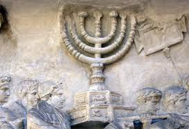
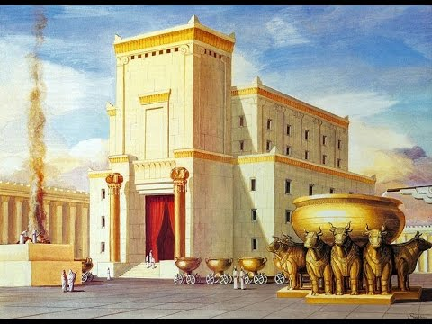
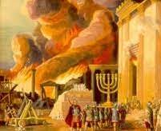
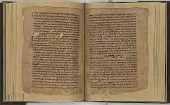
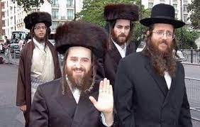

Introductie in het jodendom
Het jodendom is de oudste abrahamitische religie en is de religie van het joodse volk. Het jodendom past niet gemakkelijk in de een van de westerse categorieën zoals religie, ras, etniciteit of cultuur Dit komt doordat joden het jodendom in termen van 4000 jaar geschiedenis beschouwen. tijdens dit lange tijdperk hebben joden slavernij, chaos, theocratie, veroverin, bezetting en ballingschap ervaren en zijn zij in contact geweest met en beïnvloed door het oude Eygpte, Babylonië, Perzië en het Griekse hellenisme, evenals moderne bewgingen zoals de Verlichting het socialisme en de opkomst van het natoinalsime wat later zal lijden tot het zionisme. Daarom stelt de Joods-Amerikaanse professor Daniel Boyarin dat "joods-zijnde pure de pure categorieën van identiteit doorbreekt, omdat het niet nationaal is, niet genealogisch en niet godsdienstig maaelk van deze in een dialectische spanning." het jodendom is gebaseerd op de tenach (ook wel Hebreeuwse Bijbel genoemd die de basiswetten van het jodendom bevat en daarnaast vooral op de talmoed, die de uitleg en uitbreidingen van de basiswetten bevat.
Het onstaan van het jodendom
Volgens de Joodse traditie was de Semiet Abraham, afkomstig uit Ur de eerste jood. Daarom wordt hij aartsvader genoemd. Rabbijnse literatuur vertelt dat hij de eerste was om het tegen de rest van de wereld op te nemen en de dwaasheid van afgodendienst af te werpen. Hij vertrok naar Kanaän. Daarop beloofde God dat Abraham, inmiddels al op hoge leeftijd wonend in Kanaän met zijn vrouw, aartsmoeder Sara, nog nageslacht zou krijgen dat het land zou gaan bewonen. Hierna werd aartsvader Isaak geboren. Isaak kreeg twee zoons, Ezau en Jakob. Volgens de Tenach gaf God aan Jakob bij zijn binnenkomst in Kanaän de naam Israël hetgeen betekent: "hij die met God worstelt", en zegde hem toe dat zijn nakomelingen Zijn volk zouden zijn.
De exodus uit Egypte
God stuurde, tijdens een hongersnood in Kanaän, Jakob en zijn kinderen naar Egypte. Toen zij daar als slaven werden gebruikt, stuurde God Mozes om de Israëlieten, zoals het volk vanaf dan wordt genoemd, daar weg te halen. Na deze uittocht uit Egypte (de exodus) bracht God hen naar de berg Sinaï om hun de Thora te geven, en leidde hen uiteindelijk naar het beloofde land, Erets Jisrael. God bepaalde dat de nakomelingen van Mozes' broer Aäron een priesterklasse binnen de Israëlitische gemeenschap zouden zijn. Zij dienden tijdens de lange tocht vanuit Egypte eerst in een verplaatsbare tent, de Tabernakel. Aangekomen in het beloofde land werd de tent met de tabernakel in de stad Silo geplaatst. De tabernakel bleef daar meer dan 300 jaar. Gedurende die tijd zou God aan zijn volk leiders en strijders verstrekt hebben om hen te verzamelen tegen de vijanden die hij op hen af stuurde.
de bouw van de tempel van jerusalem
Na verloop van tijd daalde de moraal van het volk tot het punt waarin God de Filistijnen toestond om de tempel in Silo te veroveren en te plunderen. De Israëlieten vertelden de profeet Samuel dat zij het punt hadden bereikt waarop zij behoefte hadden aan een permanente koning, zoals andere volken die hadden. God wist dat dit niet het beste voor hen was, maar willigde het verzoek in en liet Samuel Saul, een groot maar zeer bescheiden mens, benoemen tot koning. Toen de mensen Saul overhaalden tegen een order in te gaan die via Samuel gegeven was, beval God Samuel om David in plaats van Saul te benoemen. Zodra David gevestigd was, vertelde hij de profeet Nathan dat hij een permanente tempel zou willen bouwen. God achtte David zelf daarvoor niet goed genoeg, maar zei dat hij zijn zoon Salomo zou toestaan om de tempel te bouwen. Salomo bouwde een tempel in Jeruzalem. De nakomelingen van Aäron dienden vervolgens als priesters in de Tempel van Jeruzalem.
de vernietiging van israël en de verwoesting van de tempel van jerusalem
Na de dood van Salomo werd het koninkrijk verdeeld in de twee koninkrijken: Koninkrijk Israël en Koninkrijk Juda. Het koninkrijk Israël had een verscheidenheid aan koningen en vanwege een zich uitbreidende afgodendienst zou God na een paar honderd jaar Assyrië toestaan om Israël te veroveren. Het koninkrijk Juda, waarvan Jeruzalem de hoofdstad was geworden en dat de tempel bevatte, bleef onder het gezag van het Huis van David. De afgodendienst echter steeg tot het punt dat God Babylonië toestond om Juda te veroveren, de tempel te vernietigen, die 410 jaar in gebruik was geweest, en zijn volk naar Babylonië te verbannen met de belofte dat zij na 70 jaar zouden worden bevrijd. Na 70 jaar werd het de mensen toegestaan terug te keren onder leiding van Ezra, en zou de tempel worden herbouwd. Deze tweede tempel stond 420 jaar overeind, waarna hij werd vernietigd door de Romeinse generaal en latere keizer Titus.
Joodse wetten en joodse feestdagen
de thora

Het fundament van de Joodse wet en traditie is de Thora, bestaande uit de vijf boeken van Mozes. Volgens rabbijnse traditie bevat de Thora 613 geboden en verboden, mitswot. Sommige van deze wetten zijn alleen van toepassing op mannen of op vrouwen, op priesters (kohaniem) of op leden van de stam van Levi, op personen die zich met de landbouw bezighouden. Vele geboden en verboden zijn niet meer relevant, omdat zij betrekking hebben op de periode toen de Tempel van Jeruzalem nog bestond. Minder dan 300 van deze geboden zijn vandaag de dag nog toepasbaar. De meeste religieuze Joden volgen niet alleen de Thora, maar ook de Misjna, de mondelinge leer, die rond 200 is vastgelegd. Het rabbijnse jodendom heeft altijd gesteld dat de geschreven boeken van de Thora op hetzelfde moment door God aan Mozes werden gegeven als de Misjna. Zij baseren zich hierin op de tekst van de Thora, waarin vele woorden ongedefinieerd blijven en vele procedures zonder verklaring of instructies worden vermeld; dit, stellen zij, betekent dat de lezer verondersteld wordt met andere details vertrouwd te zijn, en daaronder vallen de mondelinge bronnen. Er bestaan en bestonden echter ook Joodse groepen die zich alleen op de geschreven tekst van de Thora baseren, namelijk de Sadduceeërs, Beta Israël en de Karaïeten.
de Misjna
De Misjna die gezien kan worden als een parallele reeks van materiaal aan de thora, werd oorspronkelijk mondeling overgebracht. In de derde eeuw na christus. werd tegen de tijd van Rabbijn Jehoeda Hanassi veel van het mondelinge materiaal vastgelegd. In de loop van de volgende vier eeuwen onderging de misjna veel discussie in de joodse gemeenschap. er werden commentaren over de misjna geschreven deze werden gebundeld en staan nu bekend als de talmoeds van babylonië en die vsn het land israël. Deze zijn op hun beurt weer becommentarieerd door vele Thora-geleerden.
de Halacha
De huidige Halacha, de rabbijnse levensvoorschriften, zijn gebaseerd op een combineerde lezing van de Thora en de mondelinge traditie - de misjna, Midrasj, talmoed en de vele commentaren daarop. doordat de Halacha een precedent-gebaseerd systeem is, heeft het zich langzaam ontwikkeld. De literatuur van vragen aan rabbijnen en hun overwogen antwoorden, worden opgenomen in de responsaliteratuur. Dit wordt in het Hebreeuws aangeduid met Sjeëlot Oetesjoewot, wat vragen en antwoorden betekent. aangezien er altijd weer vragen rijzen blijven praktijken zich ontwikkelen. Daarom worden codes van de joodse wet gestreven die op responsa gebaseerd zijn; de voornaamste code daarvan, de Sjoelchan Aroech, Bepaalt greotendeels de Joodse religieuze praktijk tot vandaag de dag. Een voorbeeld kan zijnde vraag of met de sjabbat een lift gebruik kan worden, die aanleiding vindt in de moderne ontwikkelingen.
Joodse plichten en feestdagen
Joden die volgens de tradities leven, volgen een groot aantal plichten en gebruiken die ook voor buiten staanders zichtbaar zijn. Deze zijn onder meer:
- de Sjabbat de vrijdagavond en zaterdag, wanneer joden naar de synagohe gaan en niet werken.
- Rosj Hasjana het Joodse Nieuwjaar. De dag waarop Rosj Hasjana valt, heet ookwel Jom Hasjofar wat letterlijk de 'dag van de sjofar betekent' de sjofar verwijst naar een instrument gmaakt van een ramshoorn. het feest heeft deze naam gekregen omdat er tijdens het feest op dit instrument wordt gespeeld.
- Jom Kippoer de heiligste dag van het joodse jaar. Jom Kippoer heet ook wel de Grote Verzoendag. Op deze dag vragen joden aan God vergiffenis voor de fouten die zij hebben gemaakt. Voor de dag begint hebben ze zich bij vrienden, familieleden en kennissen verontschuldigd en vergeving gevraagd.
- Chanoeka een joods feest. Het feest staat ook wel bekend als 'het feest van de lichtjes of inwijdingsfeest. Het feest duurt acht dagen, ter nagedachtenis aan het 'oliewonder' in de Tweede Tempel van Jeruzalem in 164 v.Chr. De eerste dag van dit feest begint na zonsondergang van de 24e dag van de joodse maand kislew.
- Pesach een van de belangrijkste feesten in het jodendom. Met Pesach wordt het einde van de joodse slavernij in Egypte herdacht en de uittocht uit Egypte zoals beschreven in het Bijbelboek Exodus en daarmee de bevrijding van het joodse volk van de slavernij. Deze gebeurtenissen staan centraal in het joodse ethos. Het centrale evenement in het feest is de seider, een feestelijke maaltijd die thuis gegeten wordt.
- Kasjroet het geheel van spijswetten dat in het jodendom bepaalt of voedsel wel of niet door joden gegeten mag worden. Voedsel dat aan deze spijswetten voldoet, beschouwt men als rein en wordt in het Nederlands traditioneel koosjer genoemd. Onrein voedsel wordt treife genoemd. Orthodoxe joden gaan strikt met de spijswetten om. Liberale joden houden zich minder strikt aan alle regels.
- Tefilien gebedsriemen die gedragen worden tijdens het bidden, ook met houders voor heilige teksten.
- Keppel: joodse mannen lopen met bedekt hoofd. Ze dragen bijvoorbeeld een hoed, maar vaak ook een keppel.
- De besnijdenis die acht dagen naar de geboorte bij joodse jongens gebeurt
- Bar en bat mitswa: joodse kinderen worden vanaf hun bar mitswa (voor jongens: 13 jaar) of bat mitswa (voor meisjes: 12 jaar) als volwassen gezien in de ogen van de joodse wetgeving. Zij zijn dan ook vanaf dat ogenblik zelf verantwoordelijk voor het naleven van de geboden en verboden (mitswot).

Het joodse gebed

het joodse gebed speelt een centrale rol in de joodse religie. Zo zijn er bijvoorbeeld aangepaste gebeden voor verschillende uren van de dag, verschillende dagen van het jaar en verschillende gebeurtenissen in het mensenleven en de natuur rondom. De dagelijkse, wekelijkse en speciaal voor feestdagen bestemde gebeden volgen de beschrijving van de offerdienst voor die dag zoals die destijds in de Eerste en Tweede Joodse Tempel in Jeruzalem werd verricht. Op weekdagen zijn er drie gebeden: 's ochtends het sjachariet, 's middags mincha, en 's avonds ma'ariew (ook wel 'arwiet genoemd). Op feestdagen (inclusief sjabbat) is er bovendien een moessafdienst, die op het sjachariet volgt, en speciale gebeden of teksten die worden opgezegd. De gebeden staan vermeld in een algemeen gebedsboek voor weekdagen en sjabbat (tefilla) en in specifieke gebedenboeken (machzorim) voor feestdagen. In een machzor staan ook de dagelijkse gebeden met eventuele aanpassingen voor de feestdag vermeld.
Stromingen binnen het geloof
Orthodox jodendom
Het orthodox jodendom is een stroming binnen het jodendom die gekenmerkt wordt door de aanhankelijkheid aan de Thora zoals deze in de Talmoed wordt geïnterpreteerd. Er zijn betrokkenen die de benaming 'traditioneel jodendom' aangenamer vinden. Een minderheid van de Joden is orthodox. In de geloofsgemeenschap wordt aangedrongen op strikte naleving van de joodse wet (halacha) in al zijn facetten. Begin twintigste eeuw was orthodoxie nog de dominante vorm van het jodendom, maar honderd jaar later behoorde minder dan een vijfde van de joden tot orthodox-joodse congregaties. Het aandeel orthodoxen onder de joden neemt toe doordat het percentage huwelijken waarbij joden met niet-joden trouwen, en hun kinderen niet joods zijn of niet-joods opgroeien, onder orthodoxe joden vele malen lager is dan onder niet-orthodoxen. Een bekende stroming binenn het Orthodoxe jodendom is het Charedisch jodendom wat ook wel het ultra orthodoxe jodendom wordt genoemd
het Charedisch jodendom
"ultraorthodox", is een van de twee hoofdrichtingen binnen het orthodox jodendom. De andere richting is het modern-orthodox jodendom. De aanhangers van deze richtingen zijn voorstanders van de meest traditionele navolging van de joodse wetten. Chared betekent letterlijk vrezend, in dit verband "vrezend voor het woord van God" Het charedisch jodendom is onderverdeeld in twee hoofdstromingen, het chassidisch jodendom en de mitnagdiem (tegenstanders) of het Litouws jodendom. Na de Tweede Wereldoorlog ontwikkelden zich drie steden tot de belangrijkste centra van het charedisch jodendom: Jeruzalem en Bnei Brak in Israël en New York in de VS. Ook in Antwerpen, Londen, Manchester, Parijs, Wenen en Lyon (in volgorde van geschatte grootte) en in veel steden in Noord-Amerika, zoals Montreal, zijn gemeenschappen van charedische joden. Religieuze aanhangers van het charedisch jodendom zijn vaak visueel herkenbaar. Mannen dragen soms een speciale lange jas of bijzondere hoed en vaak een zwarte keppel (al dan niet onder een hoed), en soms lange loshangende pijpenkrullen anders vaak weggestopt achter het oor. Zij laten veelal hun baard staan. Religieuze vrouwen in deze richting dragen altijd een rok of jurk. Nadat ze getrouwd zijn, dragen ze een hoofdbedekking, nl. een hoofddoek of pruik. Een overkoepelende organisatie van charedische joden is de Jeruzalemse Edah HaChareidis. Echter, niet alle bewegingen zijn erbij aangesloten.
Liberaal jodendom
Het liberale jodendom of reformjodendom, progressieve jodendom ontstond in de 19e eeuw en had als doel om het historische jodendom met het moderne leven in overeenstemming te brengen, zodat strikte naleving van traditioneel godsdienstige wetten en rituelen niet langer een vereiste was. Volgens deze meest liberale tak van de religie moeten de joodse wetten, de Thora, worden aangepast aan moderne omstandigheden. Reformjodendom ontstond rond 1800-1850 in Duitsland, als meest liberale stroming tijdens de Verlichting en de Joodse variant hiervan, haskala. Heden ten dage is het reformjodendom met name vertegenwoordigd in de Verenigde Staten, Canada en het Verenigd Koninkrijk.